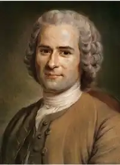

РУССО, Жан Жак (Rousseau, Jean Jacques — 28.06. 1712, Женева — 02.07.1778, Ерменонвіль, побл. Парижа) — французький філософ, письменник, композитор.Народився в сім'ї годинникаря. Мати Жана Жака померла під час пологів. Коли хлопцеві виповнилося 10 років, він залишився без батька, котрий утік із Женеви. Ставши учнем гравера, Руссо зазнав багатьох принижень, господар часто кривдив його. Руссо ще не було й 16 років, коли він був змушений покинути Женеву і податися на пошуки кращої долі. Невідомо, як би склалися його подальші мандри, але від голодної смерті Руссо врятував щасливий випадок: юнакові надала притулок пані де Варане, і в серці Жана Жака спалахнуло глибоке і сильне почуття до неї. Деякий час Руссо був лакеєм в аристократичних домах, але це надзвичайно принижувало його. Невдовзі він повернувся до маєтку пані де Варане. Тут минуло 12 найспокійніших років життя Руссо. Він багато читав — Ф. Рабле, Вольтера, Дж. Локка, інших гуманістів та просвітників, компонував музичні твори і розробляв нову систему записування нот за допомогою цифр.
У 1741 p. Руссо вирушив у Париж. Він бачив, як аристократи, придворні Людовіка XV, розкошують і розважаються, зовсім не зважаючи на те, що серед простого люду дедалі більше поширюються злидні, голод і відчай. На деякий час Руссо пощастило влаштуватися секретарем французького посольства у Венеції. Проте у дипломатичній царині панували зловживання і політичні махінації, відтак Руссо змушений був відмовитися від посади. Він знову опинився у Парижі, налагодив приязні взаємини з видатними просвітниками: Д. Дідро, Ж. Д'Аламбером, іншими філософами, котрі саме тоді почали працювати над "Енциклопедією". Дідро запропонував Руссо написати низку статей для музичного розділу "Енциклопедії".
У 1749 р. Діжонська академія організувала конкурс філософських праць на тему "Чи сприяло відродження наук і мистецтва поліпшенню звичаїв". За порадою Д. Дідро Руссо узяв участь у конкурсі, а запропоновану тему він вважав особливо знаменною: "...Йдеться про одну з тих істин, від яких залежить доля людства". Так з'явився перший значний твір письменника "Роздуми про науки та мистецтво "("Discours sur les sciences et les arts", 1750). Перша частина "Роздумів" починається з уславлення освіченої людини. Величним і важким завданням Р. вважає необхідність вивчення людини і пізнання її природи, обов'язків і покликання. Проте освіта, на думку Руссо, зовсім не завдячує своїми успіхами наукам і мистецтву. Вони потрібні деспотам, котрі "обплітають гірляндами квітів залізні кайдани, якими окуті люди, придушують у їхніх душах природне відчуття свободи, для якої люди, здавалося б, і народилися на світ, примушують любити своє рабство і формують так звані цивілізовані народи". Мистецтво та науки прищеплюють цивілізованим народам ("щасливим рабам") зовнішні риси чеснот, яких вони не мають, виховують "духовну дріб'язковість, яка понад усе необхідна для рабства". Народам, які проміняли свободу на сумнівні досягнення цивілізації, Руссо протиставляє дикунів Америки. Чому їх не лякає небезпека тиранії? Руссо відповідає на це питання так: "Американські дикуни, що не знають одягу і промишляють полюванням, непереможні: справді, яким чином можна уярмити людей, котрі не мають жодних потреб?" Завдання істинного просвітника, на думку Руссо, полягає в утвердженні доброчесності. Прикладом справді доброчесного життя письменник вважав, зокрема, діяльність античного мислителя Сократа. У другій частині трактату письменник розглядає конкретні види мистецтва і досягнення наук, наводить приклади на доказ своєї думки про шкідливість цивілізації для духовного життя людства. Стиль трактату вирізняється серйозністю і пристрасністю. Мова Руссо емоційна, насичена риторичними вигуками та запитаннями. Наріжним каменем його аргументів є не стільки логіка, як почуття. Руссо радше не переконує, а захоплює своїм відверто суб'єктивним ставленням до теми, яка цікавить його не просто як ученого, адже він виявляє найвідвертіші, найособистіші думки письменника. Трактат приніс Руссо гучну славу. Наступні покоління літераторів неодноразово зверталися до цього раннього викладу доктрини Руссо. Якщо Ш.Л. де Монтеск'є чи Вольтер виступали від імені всього "третього стану", то Руссо вже у першому своєму трактаті репрезентував найбіднішу частину суспільства — селянство. Про це він писав у наступних соціально-політичних трактатах: "Роздуми про походження і засади нерівності між людьми" ("Discours sur l'origine et les fondements de l'inegalite parmi les hommes", 1754) "Про суспільний договір" ("Du Contrat social, ou Principes du droit politique", 1762). У "Роздумах" Руссо аналізує такі важливі проблеми, як виникнення приватної власності і держави, проблему прогресу. Письменник вважає, що "від природи люди так само рівні, як і звірі". У першій частині трактату описується щасливий стан первісних людей, яких мислитель ідеалізував відповідно до своєї ідеї "природної людини". Проте на зміну первісній рівності прийшла нерівність. Руссо виокремлює три етапи утвердження нерівноправних відносин у суспільстві. Перший етап — виникнення приватної власності. "Перший, хто, обгородивши ділянку землі, сказав: "Це моє", а тоді знайшов достатньо простодушних людей, здатних повірити у ці слова, був справжнім засновником громадянського суспільства. Від скількох злочинів, війн, убивств, віл скількох поневірянь і жахіть міг би врятувати людський рід той, хто крикнув би іншим, перевертаючи частокіл і засипаючи рів: стережіться слухати цього облудника, ви загинете, якщо забудете, що продукти належать усім, а земля — нікому". Так пристрасно викриває Руссо приватну власність. Другий етап пов'язаний з розподілом землі і розшаруванням людей на багатих і бідних. Для захисту своєї власності багаті запропонували бідним укласти угоду — "суспільний договір", який би захищав права кожного з учасників угоди. Таким чином була встановлена "законна влада", тобто влада, що ґрунтується на законах, які забезпечують дотримання "суспільного договору". Але на третьому етапі "законна влада" перетворюється на сваволю і тиранію. Держава знищила "природну свободу", яку повинна була б захищати за "суспільним договором". З'явилися пани та раби, і пани привласнили владу, яка належала всьому народу, натомість народ втратив будь-які права. Трактат Руссо, у якому письменник з позицій найбіднішої частини населення гостро критикував панівні стани, справив велике враження на французьке суспільство. "Роздуми про походження і засади нерівності між людьми" відрізнялися від творів більшості просвітників не лише найдемократичнішою позицією, а й елементами діалектичного підходу до історії людства. "Про суспільний договір" — найвидатніший політичний твір Руссо, який постав на ґрунті його попередніх трактатів. Але якщо раніше письменник пристрасно викривав вади цивілізації, то в "Суспільному договорі" він намагається обґрунтувати риси ідеальної держави, викладає політичну програму революційного звучання. Руссо хоче написати суто науковий твір, у якому місце характерних для "Роздумів" піднесених або гнівних фраз посіли б логічні докази, теореми. Але він не лише філософ, а й митець. І тому Руссо кожну свою думку переживає емоційно. Перша фраза його трактату стала знаменитою: "Людина народилася вільною, а поза тим вона скрізь у кайданах". Найкращою формою державного устрою Руссо визнає республіку, хоча можливі й інші. Головний принцип держави — суверенітет народу. Це означає, що верховна влада в країні належить народові. Ця влада невідчужувана: ніхто не може відібрати у народу його верховні права і він нікому не може їх передоручити. Ця влада неподільна: законодавчу владу не можна відокремити від влади виконавчої. Отже, верховний правитель і законодавець — народ. Але хто ж тоді підданий? Той самий народ. Кожна людина повинна вгамувати свої індивідуальні потреби і бажання, підкоряючись вимогам більшості. А той, хто виступає проти більшості, може бути покараний і навіть страчений. Між народом як сувереном (правителем) і народом як підданим діє посередник — уряд, покликаний організовано здійснювати волю народу. Уряд не може мати самостійної влади, адже тоді порушуються принципи невідчужуваності та неподільності суверенітету. Якщо ж хтось спробує захопити владу, то його слід оголосити узурпатором і негайно скинути з престолу. На думку Руссо, який би уряд не прийшов До влади, народ не повинен відмовлятися від своїх верховних прав. Усі принципові питання повинні вирішуватися на загальних зборах всього народу. Відтак сучасні, величезні за територією і населенням, держави — не найліпша форма організації народів. Ідеалом письменник вважає малі держави — такі, як давньогрецькі поліси, як Швейцарія. Руссо попереджує: "У справді вільній країні громадяни все роблять власними руками, а не грошима". Щоправда, письменник має сумніви щодо здійсненності свого проекту ідеальної держави, у якій поєднались би політика і мораль, де багаті добровільно відмовились би від своїх привілеїв на користь бідних: "Якби існував народ, що складається з богів, то його урядування було б демократичним. Такий досконалий уряд не годиться для людей". Як автор віршів і поем ("Сад у Шармет", 1736; "Послання п. Борду", 1741; "Послання до Парізо", 1742; "Алея Сільвії", 1746; "Послання до п. Л'Етан", 1749), Р. не створив яскравих образів, не зміг поетично висловити свої почуття. У своїх комедіях Руссо менш розмисловий; тут проявився гумор, який заледве чи асоціюється з домінантою його світогляду. Так, у комедії "Нарцис" ("Narcisse", 1733; пост. 1752, опубл. 1753) висміяний великосвітський жевжик. В одноактовій комедії "Військовополонені" ("Les prisormiersde guerre", 1743; опубл. 1782) змальований смішний бік забобону національної ворожнечі. Загалом ці п'єси не вирізняються оригінальністю. Комедія "Відважний замір" ("L'engagement temeraine", пост. 1747, опубл. 1772) — слабке наслідування П. Маріво. Поміж опер, для яких Р. писав і лібрето, і музику, найадекватнішою таланту та головній тенденції його естетики є одноактова інтермедія "Сільський чаклун"("Le devin du village", пост. 1752, опубл.